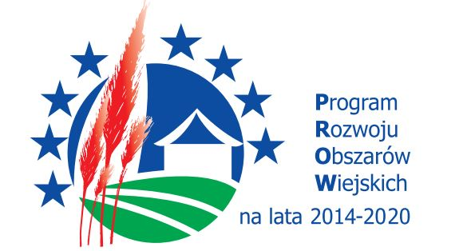
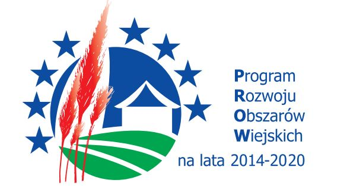

Zdrowe Bo Nasze
Zdrowe Bo Nasze
Europejski Fundusz Rolny na rzecz rozwoju obszarów wiejskich. Stworzenie
Krótkiego Łańcucha dostaw w celu zwiękrzenia sprzedaży członków nowo
powstałej grupy operacyjnej. Więcej informacji dostępne jest tutaj, a informacja o przetwarzaniu danych osobowych dostępna jest tutaj.
Nasza grupa "Zdrowe Bo Nasze" oferuje zawsze świeże produkty z własnych
gospodarstw w skład których wchodzą:
| Jan Król |
|---|
| Pakuły 21 |
| oferuje sery podpuszczkowe z mleka krowiego |
| 601 901 926 |
| Agata Piechota |
|---|
| Danków Duży 34 Włoszczowa |
| oferuje owoce |
| 608 510 238 |
| Artur Popiel |
|---|
| Kapałów 5 |
| oferuje ziemniaki |
| 691 664 627 |
| Anna Wiklak |
|---|
| Kapałów 47 |
| oferuje naturalne wyroby wędliniarskie |
| 609 928 039 |
| Ryszard Basiak |
|---|
| Lewoszów 33 |
| oferuje świeże jajka od kur z wolnego wybiegu |
| 696 603 195 |